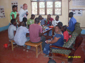
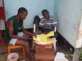
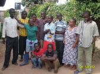

TUNAWEZA offers young people with disabilities after their graduation
from school or from the age of 14 if a school visit was not possible,
the chance to widen their social and true-to-life abilities and to gain
vocational skills. The priority is for them to achieve the highest
possible degree in self-sufficiency and self-determination.
TUNAWEZA offers young people with disabilities after their graduation
from school or from the age of 14 if a school visit was not possible,
the chance to widen their social and true-to-life abilities and to gain
vocational skills. The priority is for them to achieve the highest
possible degree in self-sufficiency and self-determination.
 Batik workshop ! Under this department, youngsters with
disabilities learn on how to stamp Wax and participate into Batik
Production. Different Batiks are produced and they are used in hand
porches or bags. Others are used to sew Aprons, women wrapping cloth or
Picnic/Outing cloth. Blue Elephant Batik is more popular and
differentiates us with others. Those who progress well get a chance to
share the Profit.
Batik workshop ! Under this department, youngsters with
disabilities learn on how to stamp Wax and participate into Batik
Production. Different Batiks are produced and they are used in hand
porches or bags. Others are used to sew Aprons, women wrapping cloth or
Picnic/Outing cloth. Blue Elephant Batik is more popular and
differentiates us with others. Those who progress well get a chance to
share the Profit.
 Sewing room ! Tailoring is one of our Backbones. The
Youngsters are trained on how to use the Sewing machines and produce
colorful dresses, shirts, Aprons, Toys, different sizes of bags and
other items for sale
Sewing room ! Tailoring is one of our Backbones. The
Youngsters are trained on how to use the Sewing machines and produce
colorful dresses, shirts, Aprons, Toys, different sizes of bags and
other items for sale
Board and Parents Meeting ! Four times a year the board
meets and parents meet. The third Friday of each December we do conduct
Annual general meeting whereby all parents, Students, Staff and members
come together for evaluation of all activities have been implemented in
a year, to plan and approve the budget in the coming year, to discuss
the narrative and financial reports of the activities implemented, Share
the experiences and of course have the party by drinking non-alcoholic
beverages, eat food together and dance!
Tunaweza Mwanza,
Location: Pasiansi-Papa Street Block ‘A’#66 - Mwanza Tanzania
Address: P.O. Box 10263, Mwanza-Tanzania:
Phone: +255 783 38 68 79
Email:info@tunawezatz.org or tunweza.mwanza@yahoo.com or tunaweza.mza@gmail.com
Paper workshop ! In this department Youngsters with
disabilities learn on how to recycle papers from fresh leaves like
bamboo stem, maize and onion leaves, Papyrus and from waste papers. The
final products from this department is production of lovely different
design of cards and Calendars
 Jewelry manufacturing!This department deals with design
and production of all ornaments and other bead materials like Key
holders, Necklaces, Bangle wire with beads earrings, Chains, Necklaces
and Fridge magnetic ornaments.
Jewelry manufacturing!This department deals with design
and production of all ornaments and other bead materials like Key
holders, Necklaces, Bangle wire with beads earrings, Chains, Necklaces
and Fridge magnetic ornaments.
Social, life and sign language kills ! Hence some of
our trainees are deaf, we once a week do provide Tanzanian Sign language
class for free. Parents and everybody who wants to widen his or her
skills in sign language in order to communicate with deaf people as well
as other community member are invited to join the Class. They also
learn other social and life skills like how to use public transport
e.t.c
Find us on Social Media